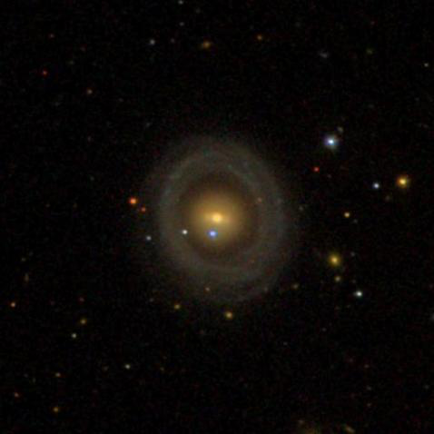
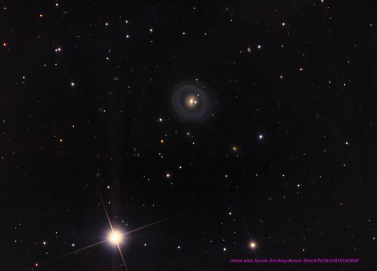

DeHt 3, an obscure PN in Sagittarius
- Name: DeHt 3
- Aliases: DHW 1-1, PK 19-13.1, PN G019.4-13.6, ESO 593-009
- RA: 19h 17m 04s
- Dec: -18° 01' 38" (J2000)
- Constellation: Sagittarius
- Type: IIa
- Size: 34" x 29"
- Magnitude: ~ 14.1V
This week's OOTW is a little-known planetary in Sagittarius, known as DeHt 3. It was discovered in 1978 or 1979 by Austrian astronomers J. Dengel, Herbert Hartl, and Ronald Weinberger at the University of Innsbruck. Over a period of a year and a half, they conducted a careful visual search for new PNe using 218 of the POSS I red (E) prints - a quarter of the entire set. The search netted 5 objects that satisfied their criteria of emission nebulae with characteristics of PNe and/or a blue central star. The authors noted that all but one of them was of "considerably low surface brightness."
Our object was first announced in 1979 and it sometimes is referred to as DHW 1-1 from this German source. The full results were reported in a January 1980 paper "A Search for Planetary Nebulae on the 'POSS'." Here it is listed as the 3rd object (DeHt 3) with an integrated blue magnitude of 15.6. In 1994, Czech astronomer Luboš Kohoutek and collaborator R. Pauls spectroscopically confirmed DeHt 3 as a planetary.
Jack Marling made the first known visual observation at a site east of Mt. Hamilton on August 11, 1985 with a 17.5-inch equatorial reflector. I was observing with Jack at the time, along with another friend, Bill Faatz. Jack called us over to take a look as he was excited about finding this obscure PN. I still remember (vaguely) all three of us in the observatory comparing visual impressions. Bill had a difficult time seeing the PN, but I recall noticing it pretty easily with averted vision.

I took a look with my own 17.5-inch Dob (Odyssey II) the following year (June 6, 1986) using 105x with an O III filter. My notes read "faint, fairly small, round, can just hold steadily with averted vision, estimate V = 14.5. Several mag 12-13 stars are nearby." DeHt 3 is located at 1.1° WSW of mag 3.9 Rho1 (44) Sgr and 10' SW of 8th-magnitude HD 180539.
In 2009, I made a second observation with my 18-inch Starmaster using 175x, along with an OIII filter. DeHt 3 was visible continuously as a small, round disc ~20" diameter, with a crisp edge. Without a filter, I didn't notice it initially when I scanned the field, but once it was seen with the filter, I could glimpse it unfiltered. A mag 12.2 star is 50" NE.

As always,
"Give it a go and let us know!
Good luck and great viewing!"